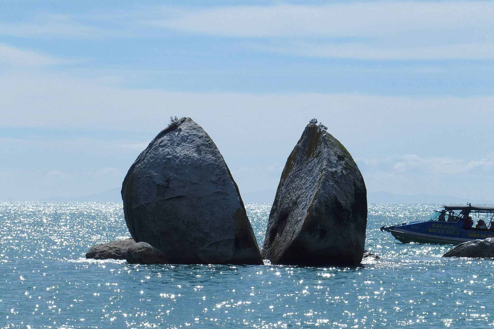

This experiment developed as a way of expanding the notion of biomimicry, extending it to something that is not alive but is still very much part of a dynamic natural cycle: rock formations. The rock cycle, which is responsible for the formation and transformation of rocks over billions of years, can be seen as a life cycle which is just as active as that of any other living creature.
References & Inspiration

Flowerpot Rocks, New Brunswick, Canada
Split Apple Rock, Kaiteriteri, New Zealand
Basalt Columns, Iceland
Found rock 1
Found rock 2
For this experiment, I produced and cast four material samples (made of plaster, sandstone, salt rock and concrete) in an attempt to replicate the composition and formation processes of igneous, sedimentary and metamorphous rock. I then used a pressure washer and sandblaster to artificially “erode” the materials, observing and documenting how each one reacted in a different way, changing in both texture and form. When placed together and viewed as a cross-section, these differences become hyper-visible.
Process - Forming Sandstone
Process - Shaping Concrete
Eroded Concrete
Eroded Salt Rock
Strata